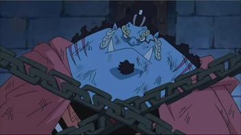

Jimbei
Jimbei, the helmsman of the Straw Hat Pirates, is a fish-man with a strong sense of honor and a master of Fish-Man Karate. He dreams of creating harmony between humans and fish-men. His calm wisdom and immense strength make him a trusted ally.